Revisión de tecnologías Sistema inteligente para la optimización y automatización del control de irrigación en cultivos utilizando tecnologías IoT
Alois Carrera | Universidad Tecnológica de Panamá

Objetivos Generales y específicos
Análisis del problema ¿Qué se resolverá?
Hardware Materiales a utilizar
Software Integración con el hardware (Open Source)
Arquitectura ¿Cómo se relacionan las capas del proyecto?
Diseño Diseño conceptual de la solución
Avances Construcción del sistema
Conclusiones Resultados de la revisión de tecnologías
Objetivos
Objetivos específicos
- Identificar la tecnología de hardware adecuada para medir parámetros ambientales.
- Elegir la cantidad de sensores y su tecnología de medición.
- Definir la vía de comunicación entre los sensores y un nodo central de procesamiento de datos .
- Definir la infraestructura que soportará la carga de datos según el hardware disponible.
- Crear un modelo de datos a recopilar.
Objetivo general
Desarrollar un sistema inteligente para el control y automatización de la irrigación de cultivos en una finca de producción, utilizando dispositivos IoT de bajo costo y tecnología de código abierto como Raspberry Pi, Arduino. Sensores de presión de agua, electroválvulas y transmisión de datos de manera inalámbrica a través de largas distancias utilizando módulos de radiofrecuencia.
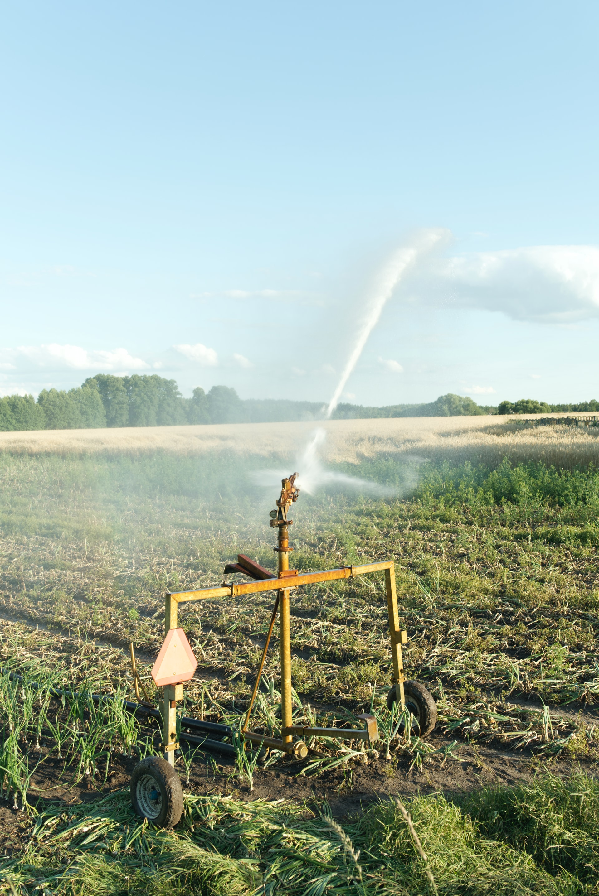
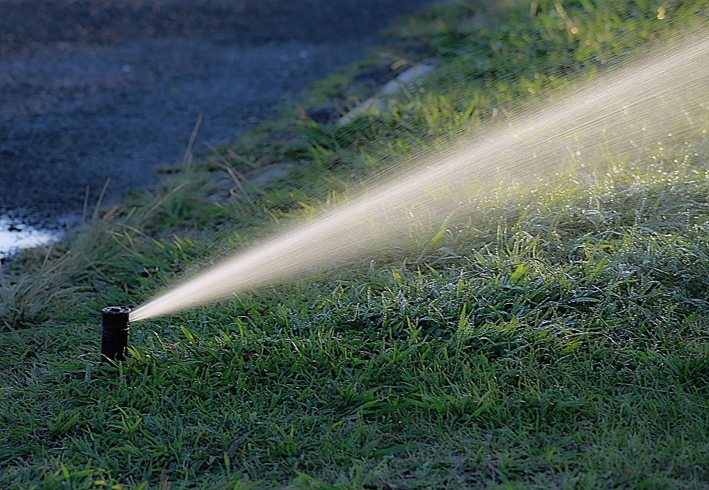
Análisis del problema
El reto por superar es la automatización, ¿cómo se puede implementar un sistema inteligente que maneje y optimice una finca en estado de producción?, donde el acceso a la electricidad es nulo y tampoco se dispone de una conexión a internet más allá de la proporcionanda mediante telefonía móvil. Es una situación compleja que en la actualidad puede ser modelada utilizando tecnología IoT, esta tecnología no es más que todos aquellos dispositivos con capacidad de interconectarse con otros o con un dispositivo central que actúe como base de procesamiento, estos también cumplen la función de recolectar cantidades exorbitantes de datos, los cuales posteriormente pueden ser analizados para generar modelos que respondan ante cierta característica que sea escogida como, por ejemplo, el control de agua.
Hardware
Tecnologías de hardware propuestas
Sensores
Miden una o más propiedades de su entorno y envian la información a un dispositivo IoT.
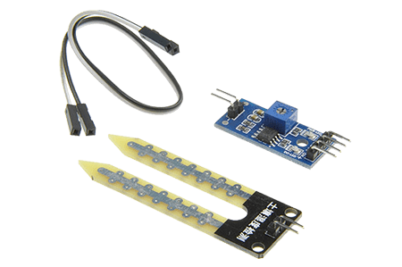
Sensor de humedad de suelo
Los sensores de humedad del suelo miden el contenido
volumétrico de agua de forma indirecta utilizando alguna otra
propiedad del suelo (la resistencia eléctrica, la constante
dieléctrica o la interacción con los neutrones) como indicador
del contenido de humedad.
Precio: ~0.6 USD
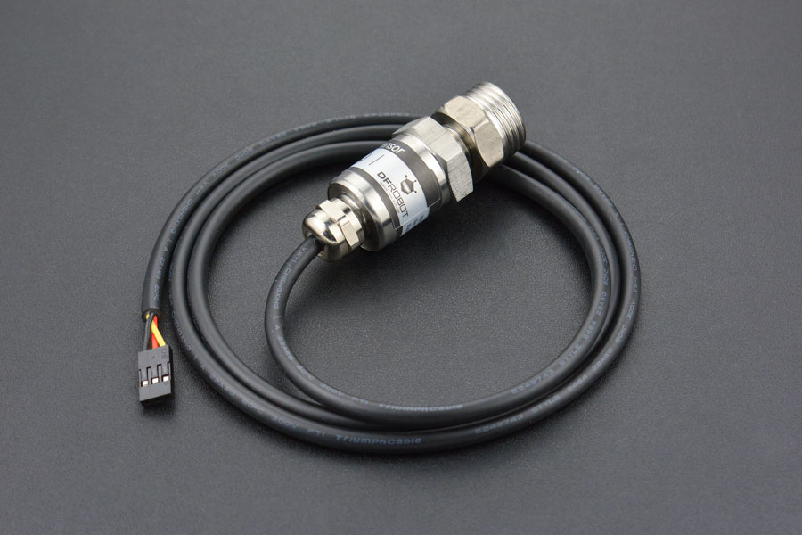
Sensor de presión de agua
Los sensores de presión de agua suelen tener un diafragma de
silicona que se dobla al aplicar la presión. El diafragma es
una membrana extensible que cambia su resistencia eléctrica
cuando se aplica la fuerza. La resistencia en el circuito se
utiliza para modificar la tensión de salida.
Precio: ~8-20 USD
Actuadores
Convierten una señal eléctrica de un dispositivo IoT en una interacción con el mundo físico, como la emisión de luz o sonido, o el movimiento de un motor.
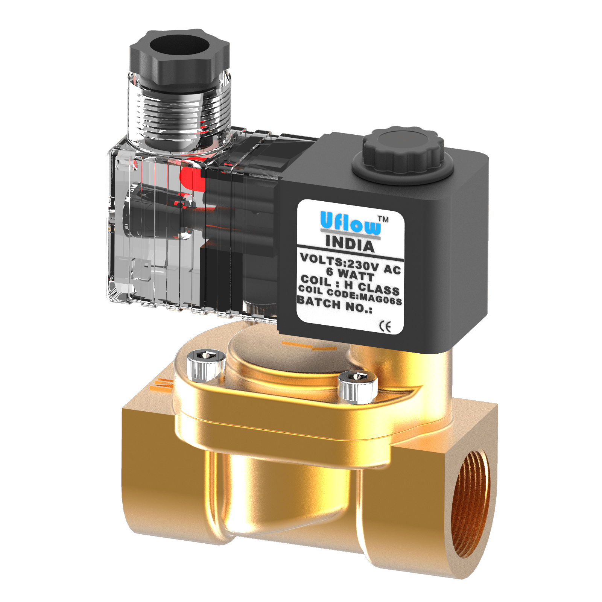
Electroválvula
Una electroválvula es una válvula electromecánica que regula
el flujo de fluido a través de un conducto o tubería. Una
bobina de solenoide controla la válvula. Normalmente sólo hay
dos opciones: abierta y cerrada.
Precio: ~5-15 USD
Comunicación
Mientras que algunas comunicaciones con dispositivos similares son directas, las comunicaciones remotas a menudo tendrán que pasar por un gateway para llegar a su destino. El gráfico ilustra un modelo de comunicaciones inalámbricas y cómo cada "nodo" de la red inalámbrica desempeña un papel definido. En el ejemplo, que se denomina "red en estrella", un módulo inalámbrico inteligente coordina las comunicaciones hacia los dispositivos que actúan como routers y éstos trasladan las comunicaciones a los dispositivos finales.
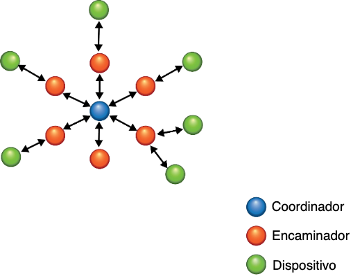
El escenario cambia para diferentes combinaciones de dispositivos y protocolos inalámbricos. En el siguiente diagrama se puede ver cómo se pueden construir redes que se comporten de diversas maneras con el uso de diferentes protocolos inalámbricos. El mejor protocolo depende de varios factores, como la distancia entre los nodos de comunicación de la red.
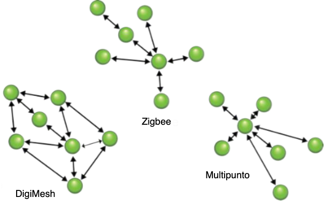
La topología más adecuada sería una red en árbol, o red en estrella ya que es una topología de red híbrida.
- Nodos sensores: Leen continuamente el estado de todos los sensores conectados y transmiten los datos de los sensores a través de la red de radio. Estos nodos deben tener la opción de dormir la mayor parte del tiempo si funcionan con batería.
- Nodos repetidores (y sensores): Permanecen despiertos para pasar los mensajes de sus nodos sensores hijos. Un nodo repetidor puede incluir opcionalmente sensores conectados directamente e informar de los datos de sus sensores al gateway.
- Gateway: Transmite los datos de los nodos al software controlador, así como del controlador a los nodos. También se le pueden conectar sensores directamente.
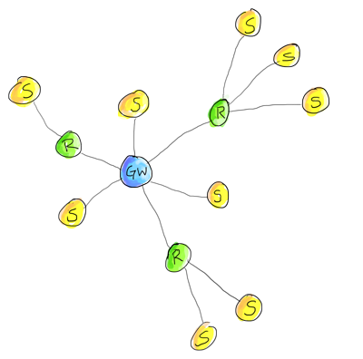
Microcontrolador
Es un pequeño computador en un único chip de circuito integrado (IC) de óxido metálico (MOS).
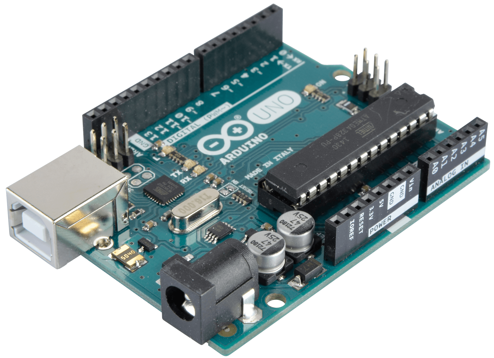
Arduino UNO
Arduino es una plataforma computacional física open-source
basada en una simple tarjeta de I/O y un entorno de desarrollo
que implementa el lenguaje Processing/Wiring.
Precio: ~8-15 USD
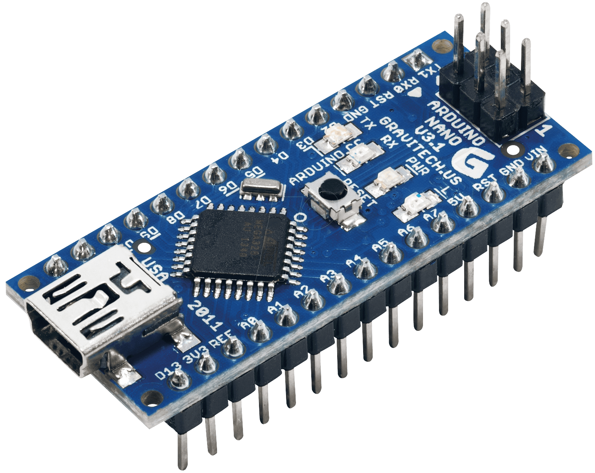
Arduino Nano
Arduino Nano es una placa pequeña, completa y fácil de usar en
la protoboard, basada en el ATmega328 (Arduino Nano 3.x).
Tiene más o menos la misma funcionalidad del Arduino
Duemilanove, pero en un paquete diferente. Sólo carece de un
conector de alimentación de CC, y funciona con un cable USB
Mini-B en lugar de uno estándar.
Precio: ~3-8 USD
Protocolos de comunicación
Un protocolo de comunicación inalámbrica es un conjunto de reglas estándar con el que varios dispositivos electrónicos se comunican entre sí de forma inalámbrica.
LPWAN
La tecnología de red de área amplia de baja potencia (LPWAN) proporciona el bajo coste, el bajo consumo y la cobertura de área amplia necesarios para las redes de sensores inalámbricos de gran tamaño. Pensada para aplicaciones de telemetría del IoT en las que se transmiten periódicamente pequeñas cantidades de datos, la LPWAN redefine la forma de supervisar y gestionar a distancia los activos y procesos.
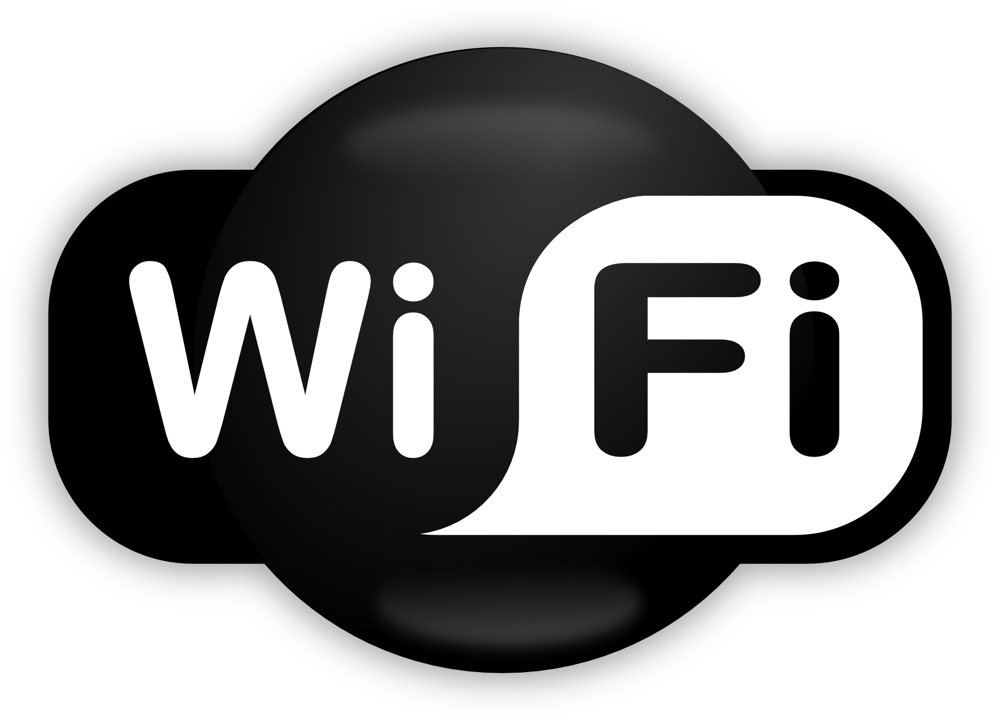
Wi-Fi
Alta velocidad de datos (54Mbit/s+) pero alto consumo de energía. Se utiliza cuando se necesita conectar directamente a internet y se dispone de una fuente de alimentación externa.
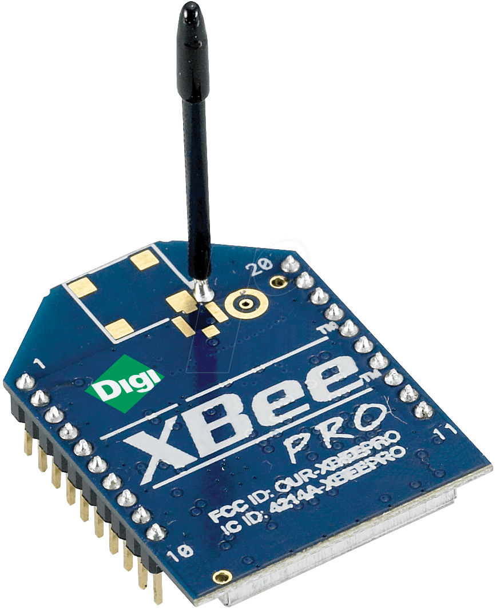
Xbee
Baja velocidad de datos (250kbit/s) y bajo consumo de energía. Se utiliza para crear redes de sensores de tipo malla; cada dispositivo XBee puede comunicarse entre sí y, a través de la malla, con los dispositivos que están fuera de su alcance. Se utiliza para redes de dispositivos, sobre todo de domótica y sensores.
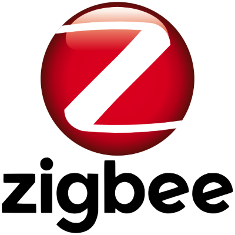
ZigBee
Se utiliza para crear redes de área personal con radios digitales pequeños y de baja potencia, como domótica, dispositivos médicos. Su bajo consumo de energía limita las distancias de transmisión a 10-100 metros de línea de visión, dependiendo de la potencia de salida y de las características ambientales.
Z-Wave
Z-Wave es un protocolo de comunicaciones inalámbricas utilizado principalmente para la automatización del hogar. Se trata de una red en malla que utiliza ondas de radio de bajo consumo para comunicarse de aparato a aparato, lo que permite el control inalámbrico de aparatos residenciales y otros dispositivos, como el control de la iluminación, los sistemas de seguridad, los termostatos, las ventanas, las cerraduras, las piscinas y los mandos de apertura de puertas de garaje.
Dispositivos de comunicación
Un módulo de radiofrecuencia es un dispositivo electrónico pequeño que se utiliza para transmitir y/o recibir señales de radio entre dos dispositivos.
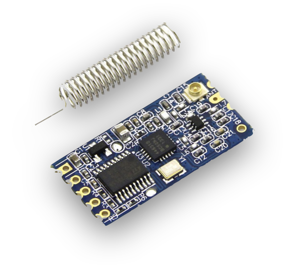
HC-12
El HC-12 es un módulo de comunicación serie inalámbrica
semidúplex con 100 canales en el rango de 433,4-473,0 MHz que
es capaz de transmitir hasta 1 km.
Precio: ~1.50 USD
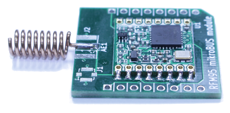
RFM95
Los transceptores RFM95 incorporan el módem de largo alcance
LoRa, que proporciona una comunicación de espectro ensanchado
de alcance ultra largo y una alta inmunidad a las
interferencias, al tiempo que minimiza el consumo de
corriente.
Precio: ~1.50 USD
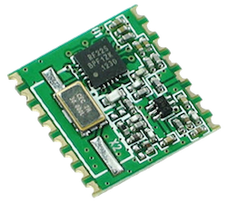
RFM22B
Es un módulo transceptor ISM inalámbrico de 433, 868 y 915MHZ
de bajo coste y altamente integrado. Estos módulos pueden
comunicarse a muchos, muchos kilómetros, dependiendo de la
velocidad de datos y del entorno de RF.
Precio: ~5-10 USD
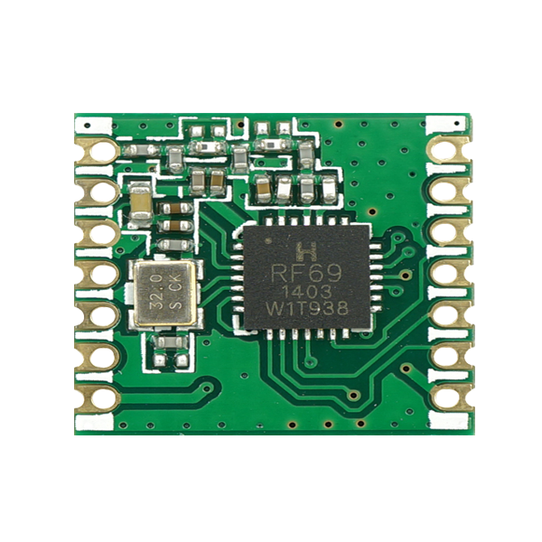
RFM69
Es un módulo transceptor capaz de funcionar en una amplia gama
de frecuencias, incluidas las bandas de frecuencia ISM
(Industria, Ciencia y Medicina) libres de licencia de
315,433,868 y 915MHz. El RFM69 ofrece la ventaja única de
contar con modos de comunicación programables de banda
estrecha y banda ancha.
Precio: ~6-13 USD

nRF24L01+
El NRF24L01+ es una versión más nueva del NRF24L01, capaz de
hacer un extra de 250kbps de velocidad de datos al aire
mientras que el que no tiene "+" sólo tiene 1Mbps y 2Mbps.
Utiliza las bandas ISM de 2.4-2.5 GHz. 125 canales,
comunicación multipunto y salto de frecuencia.
Precio: ~1-4 USD
Gateway
El gateway actúa como enlace entre el controlador y la red de radio. Traduce los mensajes de radio a un protocolo que pueda ser entendido por un controlador.
Microcontrolador
Actuador
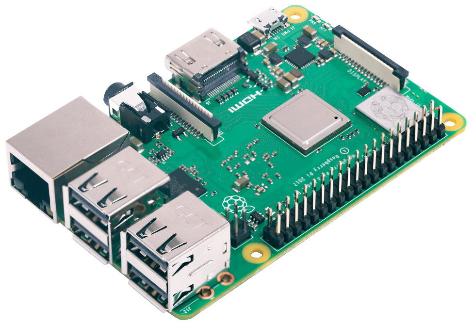
Raspberry Pi
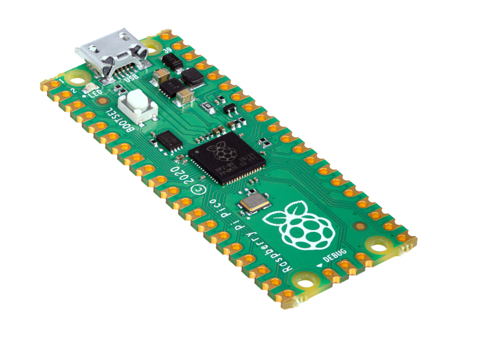
Raspberry Pi Pico
Software
Tecnologías de software propuestas
Framework Arduino
El framework instalado en el microcontrolador es el encargado de manejar los sensores y/o actuadores conectados, además enviar/recibir/interpretar datos que vienen desde el Gateway.
A cada nodo se le asigna un
sensorId o dirección única que se utiliza
para enviar y recibir mensajes punto a punto.
Se puede asignar un sensorId estático (en el sketch) o dejar
que el controlador asigne uno automáticamente al sensor.
El modo AUTO configura el sensor para
solicitar un sensorId al controlador. El
sensor almacena el sensorId asignado en su
memoria no volátil
para asegurar que el sensorId correcto persiste a través de
las transiciones de energía. Un gateway siempre tiene el
sensorId 0. La primera vez que un nuevo sensor arranca,
determinará el camino hacia la puerta de
enlace enviando un mensaje especial de
"ayúdame a encontrar mi camino a casa" .
Los nodos repetidores-sensores y el Gateway escuchan estos
mensajes y responderán al mensaje de
petición de ayuda de un sensor. Su respuesta
informará al sensor de la
distancia a la que se encuentra del Gateway
para que el nuevo sensor pueda
determinar el camino más corto hacia el
Gateway, ya sea directamente o a través de un nodo
repetidor-sensor que sea el más cercano a el Gateway.
Si más adelante el nodo sensor
pierde el contacto con el Gateway o con un
nodo repetidor-sensor,
repetirá automáticamente este procedimiento
para determinar el mejor camino hacia el Gateway: un nodo
sensor considera que ha perdido el contacto con el Gateway si
no envía 3 mensajes consecutivos. Los nodos
Gateway y repetidores-sensores mantienen una pequeña
tabla de enrutamiento para saber hacia
dónde dirigir sus mensajes en la red que los rodea. Los
repetidores y el Gateway construyen la tabla de enrutamiento
automáticamente mediante la
introspección de los mensajes recibidos .
Controlador
Los controladores son programas informáticos que se encargan de responder a las solicitudes de los nodos y transmitir órdenes previamente especificadas a los mismos.
-
El propósito del controlador es:
- Enviar los parámetros de configuración a los sensores de la red de radio (la hora y los identificadores únicos de los sensores).
- Mantener un registro de los datos más recientes reportados por los sensores y actuadores.
- Proporcionar información de estado a los sensores y actuadores; por ejemplo, el estado actual (encendido/apagado/nivel de carga) de una luz.
- El controlador suele proporcionar una interfaz de control para los actuadores.
- Ejecuta programas o escenas predefinidas; por ejemplo, al atardecer enciende las luces del jardín.
Node-RED es una herramienta de programación para conectar dispositivos de hardware, API y servicios en línea de formas nuevas e interesantes.
Node-RED consiste en un editor de flujos con interfaz web basado en Node.js. Dentro del navegador se crea una aplicación arrastrando nodos de la paleta a un espacio de trabajo y se conectan. La aplicación se despliega en el tiempo de ejecución en un dispositivo. La paleta de nodos puede ampliarse fácilmente instalando nuevos nodos creados por la comunidad y los flujos pueden compartirse fácilmente como archivos JSON.
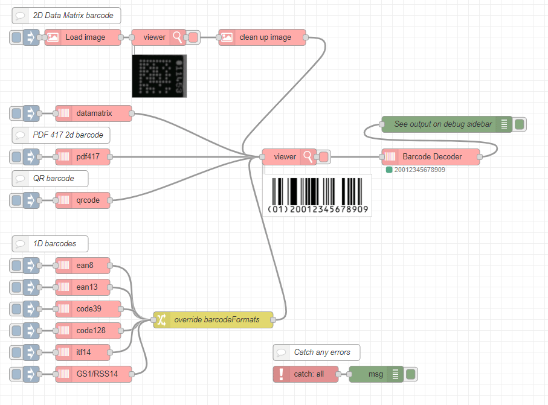
Protocolo de red
Protocolo de red de publicación-suscripción que transporta mensajes entre dispositivos.
MQTT son las siglas de Message Queuing Telemetry Transport. Se
trata de un protocolo de mensajería ligero que se utiliza en
los casos en los que los clientes necesitan
pequeñas cantidades de código y están
conectados a redes poco fiables o con recursos de
ancho de banda limitados . Se utiliza
principalmente para la comunicación máquina a máquina (M2M) o
para conexiones del tipo Internet de las Cosas.
MQTT se ejecuta sobre TCP/IP utilizando una topología
PUSH/SUBSCRIBE. En la arquitectura MQTT, hay
dos tipos de sistemas: clientes y brokers. Un
broker es el servidor con el que se comunican los clientes. El
broker recibe las comunicaciones de los clientes y las envía a
otros clientes. Los clientes
no se comunican directamente entre sí , sino
que se conectan al broker. Cada cliente puede ser un
publicador, un suscriptor o ambos.
MQTT es un protocolo basado en eventos. No
hay una transmisión de datos
periódica o continua. Esto mantiene la
transmisión al mínimo. Un cliente
sólo publica cuando hay información que
enviar, y un broker sólo envía información a
los suscriptores cuando llegan nuevos datos.
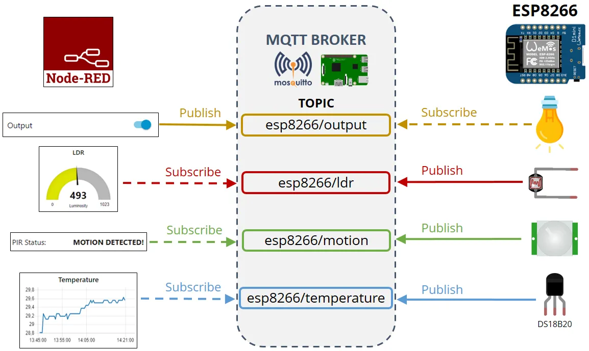
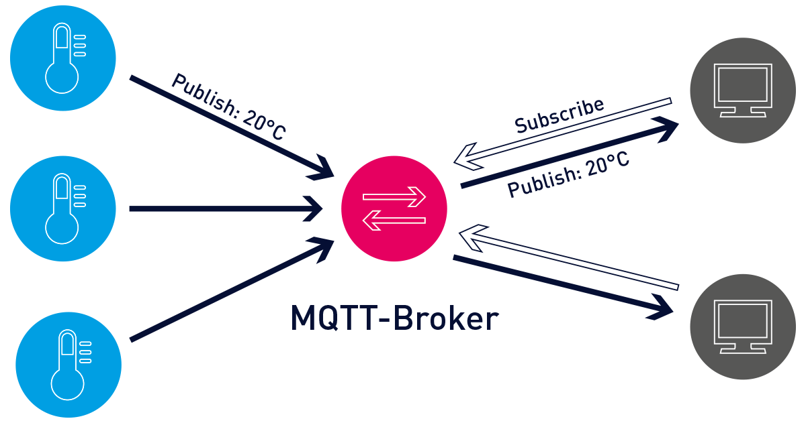
Monitorización
Plataforma de recolección de datos, procesamiento, visualización y gestión de dispositivos.
-
ThingsBoard
- Atributos: Capacidad de la plataforma para asignar atributos clave-valor personalizados a sus entidades (por ejemplo, configuración, procesamiento de datos, parámetros de visualización).
- Telemetría: API para la recogida de datos de series temporales y casos de uso relacionados.
- Entidades y relaciones: Capacidad de la plataforma para modelar objetos del mundo físico (por ejemplo, dispositivos y activos) y las relaciones entre ellos.
- Visualización de datos: Cubre las capacidades de visualización de datos; widgets, cuadros de mando, estados del cuadro de mando.
- Motor de reglas: Cubre el procesamiento de datos y las acciones sobre la telemetría y los eventos entrantes.
- RPC: API y widgets para enviar comandos desde sus aplicaciones y cuadros de mando a los dispositivos y viceversa.
- Registro de auditoría: Seguimiento de la actividad de los usuarios y del uso de las llamadas a la API.
- Límites de la API: Control del uso de la API, limitando el número de solicitudes de un solo host durante una sola unidad de tiempo.
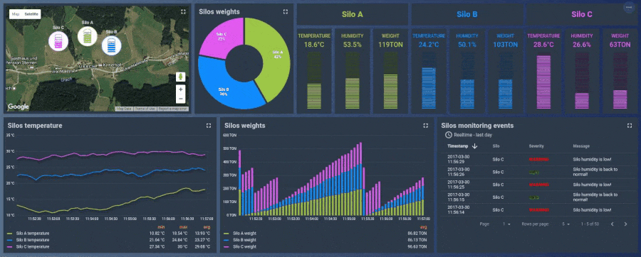
-
Grafana
- Grafana es una solución de código abierto para ejecutar analíticas de datos, extraer métricas que den sentido a la cantidad masiva de datos y monitorizar nuestras aplicaciones con la ayuda de geniales cuadros de mando personalizables.
- Grafana se conecta con todas las fuentes de datos posibles, comúnmente conocidas como bases de datos como Graphite, Prometheus, Influx DB, ElasticSearch, MySQL, PostgreSQL, etc.
- Grafana al ser una solución de código abierto también nos permite escribir plugins desde cero para la integración con varias fuentes de datos diferentes.
- La herramienta nos ayuda a estudiar, analizar y supervisar los datos durante un período de tiempo, técnicamente llamado análisis de series de tiempo.
- Nos ayuda a rastrear el comportamiento del usuario, el comportamiento de la aplicación, la frecuencia de los errores que aparecen en producción o en un entorno de pre-producción, el tipo de errores que aparecen y los escenarios contextuales proporcionando datos relativos.
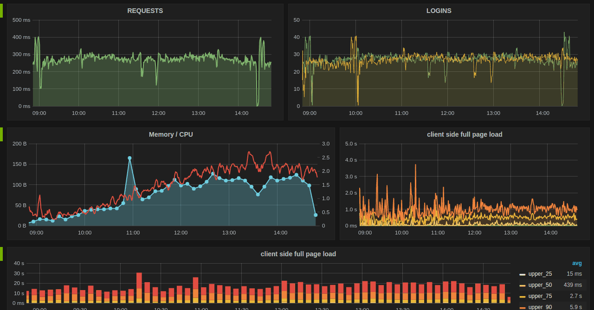
Base de datos
IoT produce cantidades masivas de datos, como datos de flujo, datos de series temporales, datos RFID y datos sensoriales, entre otros.
InfluxDB
InfluxDB es una base de datos de series temporales (TSDB) de código abierto desarrollada por la empresa InfluxData. Está escrita en el lenguaje de programación Go para el almacenamiento y la recuperación de datos de series temporales en campos como la monitorización de operaciones, las métricas de las aplicaciones , los datos de los sensores del Internet de las Cosas y los análisis en tiempo real. También tiene soporte para el procesamiento de datos de Graphite.
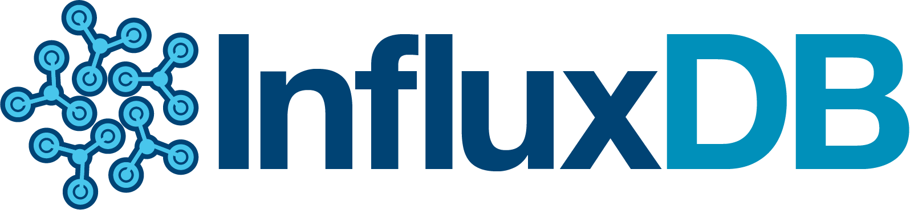
QuestDB
QuestDB es una base de datos relacional
orientada a columnas diseñada para
series temporales y datos de eventos.
Utiliza SQL con extensiones para series temporales que
ayudan a realizar análisis en tiempo real.
QuestDB utiliza un modelo de almacenamiento basado en
columnas. Los datos se almacenan en tablas con cada
columna almacenada en su propio archivo y
su propio formato nativo. Los nuevos
datos se añaden al final de cada columna para permitir que
los datos se recuperen orgánicamente en el mismo orden en
el que se ingirieron.
La API REST de QuestDB se basa en las
características estándar de HTTP y es
entendida por los clientes HTTP estándar. Proporciona una
forma sencilla de interactuar con QuestDB y es compatible
con la mayoría de los lenguajes de programación. Las
funciones de la API están totalmente
codificadas en la URL y utilizan
parámetros de consulta como argumentos.
Arquitectura

Diseño conceptual

Avances
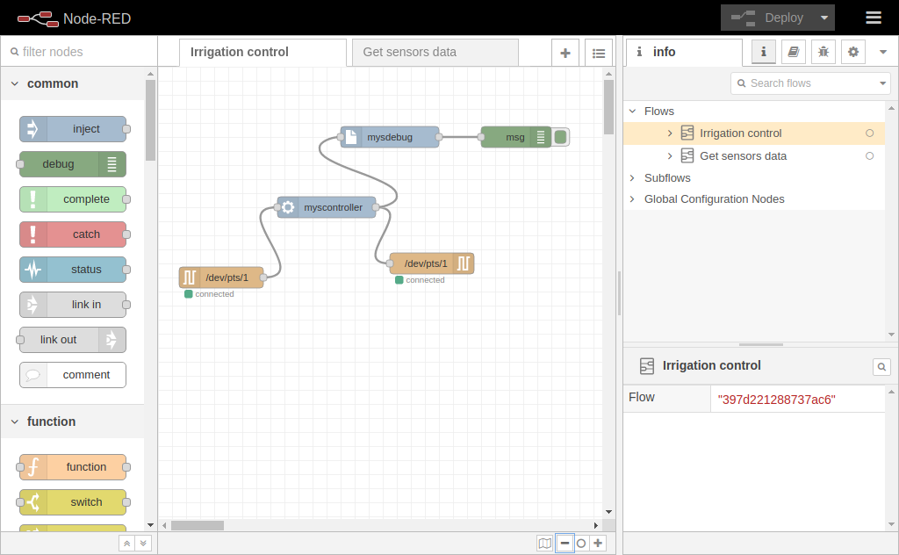
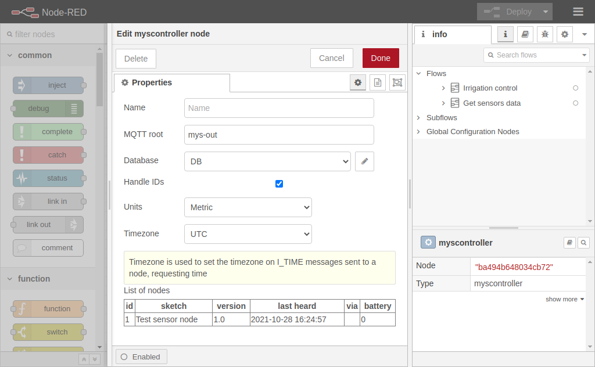
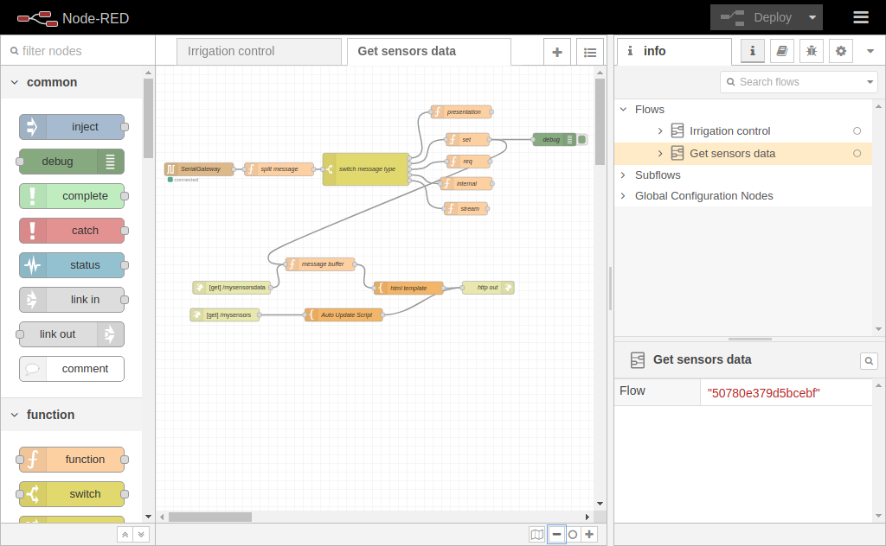
Conclusiones
El mal control del agua puede afectar la producción de los
cultivos, ya que en épocas de sequía es
indispensable gestionarla lo mejor posible, para ello el uso de
la tecnología informática , diferentes tipos
de sensores y
herramientas automatizadas pueden ayudar
enormemente a solventar el problema de la escasez de agua,
proveyendo una solución capaz de operar
sin intervención humana, las
24 horas del día gracias al
poco consumo energético y ofreciendo una tasa
de optimización alta en comparación a otros sistemas, lo cual se
traduce en la reducción de problemas a largo plazo para los
productores.
Actualmente el proyecto cuenta con una
arquitectura base para partir, el diseño de los
nodos y la comunicación entre estos es
robusta y fiable. Todas las tecnologías, tanto
de software como de hardware seleccionadas son
Open Source, lo cual contribuye al desarrollo
de la comunidad y además se obtiene un
ahorro en los costos. Los pasos siguientes son
el desarrollo de la capa de transmisión de datos a través del
protocolo MQTT y utilizando una
REST o GraphQL
API se consumirán los datos y la analítica desde una aplicación
web dónde el usuario pueda ver la información en
cualquier parte del mundo .